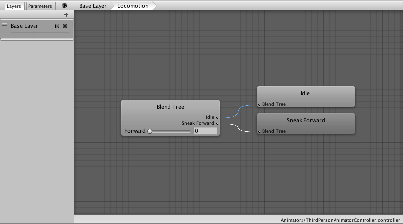
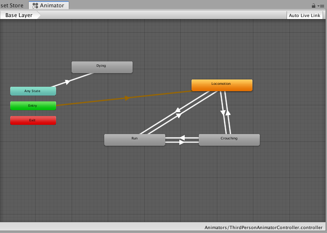
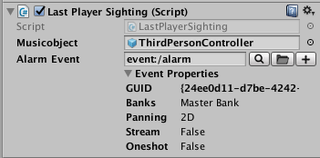

Proyecto final EthanStealth |
1 Implementación de scripts específicos A continuación se listan los scripts que por su funcionalidad especifica deben ser reemplazados en el proyecto de Unity para interactuar con los eventos de FMOD En el siguiente archivo comprimido encontrara los respectivos scripts con la misma jerarquía que aparecen en Assets/Scripts en el proyecto original de Unity. Se deberán reemplazar en las mismas ubicaciones, para esto diríjase a la carpeta de scripts en Unity, de clic derecho “reveal in Finder”. Luego reemplacé cada uno de los scripts en las mismas ubicaciones teniendo en cuenta que Unity no se encuentre en modo play. Paso seguido Unity compilara de nuevo los scripts y añadirá las nuevas funcionalidades para vincular los eventos de FmodStudio. Luego para saber que elementos en la escena hacen uso de cada script, podemos dar clic derecho sobre el script nuevo en la opción “Find References in Scene”. Esto aplicara un filtro en la vista de jerarquía “Hierarchy” y mostrara solo los objetos que contienen dicho script. Para el ejemplo veremos que el script EnemyShooting que corresponde a los disparos de los robots esta siendo usado por los objetos char_robotGuard_001 al 004 que son los cuatro robots que aparecen en la escena. |
Por ser un juego en tercera persona, la mejor forma de implementar los pasos es a través de las animaciones; para eso usaremos los scripts: * FMODStudioThirdPersonControllerFootsteps.cs : este script deberá colocarse directamente en el ThirdPersonController y se debe configurar como se observa en la siguiente imagen: * FMODStudioMaterialSetter.cs : este script se debe añadir a cada superficie que se desee asignar un material especifico para que genere cambio en el tipo de paso. Una vez asignados los scripts, debemos configurar las animaciones que disparan el evento de paso; en este videojuego, el personaje se mueve a través de 3 tipos de animaciones. A continuación se identifican y se muestra una imagen de su configuración. Todas las animaciones se encuentran en la siguiente ruta: Assets/Animations/Humanoid
Ejemplo de configuración de los eventos en la animación, luego de crearlos, damos clic en Apply El mismo proceso debemos realizarlo para las siguientes animaciones:
Luego de configurar los scripts y el evento “Step” en las animaciones, ejecutamos la escena y confirmamos que los pasos estén en sincronía y los cambios de velocidad y material funcionen correctamente. Nota: si al detenerse el personaje luego de caminar agachado o en sigilo se siguen escuchando los pasos,debemos realizar los siguientes ajustes: Nos dirigimos a la siguiente ruta Assets/Animators/ y damos clic en el elemento “ThirdPersonAnimatorController” Se desplegara una una nueva pestaña llamada animador como se muestra a continuación: Damos doble clic sobre el elemento amarillo denominado “Locomotion”; deberá desplegar la siguiente vista:  Seleccionamos el elemento Blend Tree y en el inspector nos debe mostrar una especie de crossfade que se encarga de hacer la transición entre la animación de caminar y la animación de reposo. Debemos quitar la selección del parámetro Automate Thresholds y luego configurar el umbral (Threshold) de la animación idle en 0.5 De esta forma se evita que la animación de caminado quede reproduciendo y emitiendo eventos de paso al hacer la transición. El mismo proceso debemos realizarlo para la transición de las animaciones cuando el personaje esta agachado: Nos devolvemos a la vista del animator, pero esta vez damos doble clic sobre el objeto Crouching  Paso seguido seleccionamos del objeto Blend Tree y realizamos el respectivo ajuste en el inspector. Ahora los pasos deberán funcionar correctamente. Nota: Al presionar de forma sostenida la tecla shift izquierda, el personaje debe correr y como consecuencia deberá cambiar el parámetro en fmod definido como “Velocidad”, esto depende de como estén configurados los controles en el juego, si por defecto no se genera el cambio, debemos ir al menú. Edit/project Settings/Input Y verificar la existencia del control Run con la asignación de la tecla "left shift" También debemos crear el input Crouch que será el encargado de disparar el sonido cuando el personaje se agacha o se levanta, por defecto funciona con la tecla “c” En Fmod el evento de pasos deberá tener la siguiente estructura: (ejemplo para 2 materiales, podrá tener los que sean requeridos en la escena) En la siguiente imagen se muestra un ejemplo de la configuración del parámetro material : Ejemplo de evento Crouch |
2. Implementación de Música Adaptativa 1. Colocar el evento de música a través de un componente FMOD Studio Emitter en el elemento ThirdPersonController. Asegurarse que el evento en FMOD es de tipo 2D. El evento diseñado en FMOD debe tener los estados que se describen a continuación según las situaciones que se presentan en el juego: Estado Menú : música del menú del juego, se ejecutara al inicio y cada vez que se pause el juego. Estado Exploración : música de exploración que se ejecuta al dar start o resume desde el menú de inicial del juego. Estado Alarma: música que se ejecuta cada vez que se dispara la alarma cuando el personaje es detectado por una cámara, enemigo o toca una puerta laser. Estado Fin: Efecto sonoro o música que se ejecuta cuando el personaje muere. Nota: Los parámetros deben nombrarse tal cual como se ve en la figura anterior (Mayúsculas), para que los scripts hagan correctamente los cambios.
a) gameController - LastPlayerSithing.cs  b) MenuCanvas – Pause.cs b) ThirdPersonController – PlayerHealth.cs Notará que en los tres casos lo nuevo en el script es el campo llamado Musicobject. Allí deberá seleccionar o arrastrar el ThirdPersonController, ya que es el elemento que contiene el Event emitter de la música que se configuro inicialmente. Los tres scripts están programados para generar los cambios respectivos en los parámetros ALARM, PLAY, LIFE. Solo se deben configurar las respectivas condiciones en FMOD y dejar los parámetros iniciales como se muestra en la imagen del event emitir en el ThirdPersonController . |